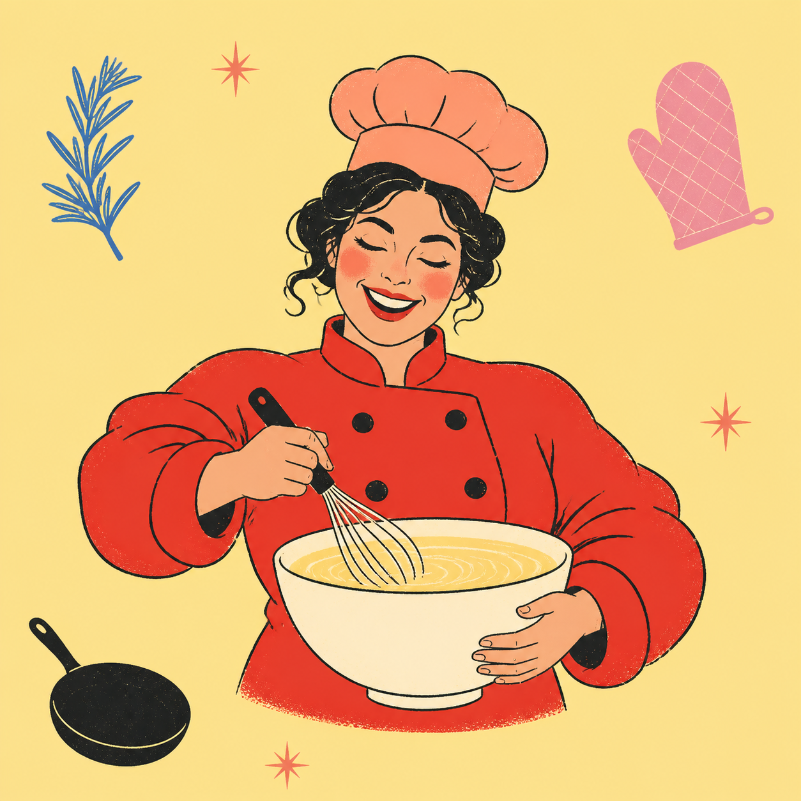

pp
GOOD FOOD, LESS FUSS
Cook smarter
not harder.
Quick and easy recipes, ready in under 30 minutes.

fresh
easy
yum!
TUESDAY, 12 MAR
What are you
craving?
RECIPE 02 / 172
COMFORT FOOD
Miso ramen,
your way.
A rich, cozy bowl with a jammy egg and whatever greens are in your fridge.
28mins520kcalEasylevel